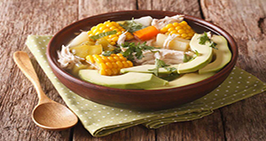

Ajiaco
Contexto Histórico
O ajiaco é normalmente apresentado aos turistas em Bogotá como o prato tradicional da cidade. A origem do Ajiaco é indígena, com influências espanholas e africanas. Embora preparações similares sejam encontradas no Chile e em Cuba, o ajiaco colombiano tem a particularidade de levar em seu preparo três das variedades de batata do país: pastusa, sabanera e criolla.
Um fato curioso é que em Bogotá no século XIX, segundo os historiadores, este prato foi usado para ocasiões especiais, geralmente para a celebração de Corpus Christi e estava sempre presente nas festas de Natal.

Ingredientes:
2 kg de peito de frango
2 kg de batata
1/2 kg de mandioquinha4 milhos
Sal
Alcaparras
Creme de leite
MODO DE PREPARO:
Corte os milhos em pedaços grandes e coloque em uma panela a fogo alto com dois litros de água aproximadamente.
Descasque as batatas e corte em cubos para colocar junto com os milhos. Retire a pele do frango e coloque a carne (peito de frango) junto com os outros ingredientes.
Lave e descasque a mandioquinha e corte em fatias; coloque por ultimo na panela. Quando o frango estiver pronto, retire da panela para desfiar ele em pedaços médios.
Baixe a temperatura a fogo médio deixando que a sopa fique um pouco grossa, se ficarmuito liquida esmague umas batatas no fundo da panela. Coloque sal.
Agregue novamente o frango antes de servir na mesa.